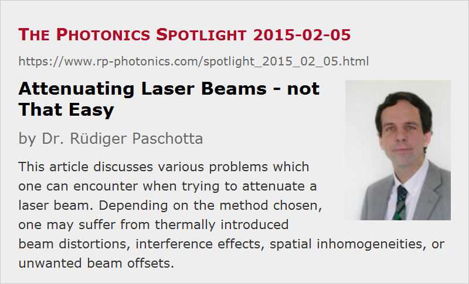

Attenuating Laser Beams – not That Easy
Posted on 2015-02-05 as a part of the Photonics Spotlight (available as e-mail newsletter!)
Permanent link: https://www.rp-photonics.com/spotlight_2015_02_05.html
Author: Dr. Rüdiger Paschotta, RP Photonics Consulting GmbH
Abstract: This article discusses various problems which one can encounter when trying to attenuate a laser beam. Depending on the method chosen, one may suffer from thermally introduced beam distortions, interference effects, spatial inhomogeneities, or unwanted beam offsets.

Ref.: encyclopedia article on optical attenuators
In principle, attenuating a laser beam, i.e., reducing its optical power, is an easy thing: simply send it through a partially absorbing medium, or exploit a partial reflection. In practice, however, various nasty problems can arise, some of which are discussed in the following.
Thermally Induced Distortions
Because laser beams often carry substantial optical powers, absorption of a significant part of that power can lead to substantial thermal effects. Therefore, e.g. absorbing neutral density filters are often not suitable for such purposes: the increased temperature in the glass would lead to strong thermal lensing effects, which can focus the beam and distort its spatial profile.
For higher powers, the glass could even be fractured; a few watts would usually be sufficient for that effect.
Interference Effects
For attenuating the output of a single-frequency laser with a moderate optical power (a few hundred milliwatts), I once (being a beginner in the field) used several neutral density filters in series. I was then very astonished and frightened to see the transmitted power dropping strongly within a few seconds after turning on the laser; initially, I thought the laser had been damaged. It turned out that due to the significant reflectance of these filters, I had actually realized a Fabry–Perot interferometer. When this got into resonance, a relatively high optical power was circulating between the surfaces of two filters, and that heated these filters such that their surfaces were somewhat bulged. That in turn tuned the resonance frequency and thus influenced the circulating power. Due to the resonance effect, the transmitted power was also far higher than expected.
It turned out that I had to somewhat tilt the filters against the beam such that no light could circulate between them. That was an easy measure, but I had already spoiled some spots on the filters by overheating. Only the resonance effect produced enough heat for damage of the parts.
Spatial Inhomogeneities
When monitoring the output power of the high-power laser with a photodiode, a high degree of attenuation of the power is required.
It may sound clever if you utilize not the actual output beam, but rather a parasitic beam getting through a highly reflecting mirror of the laser resonator due to the non-perfect reflectance. Then you do not have to place additional things into the output beam and do not lose any useful output power.
However, it can be problematic that the residual transmission of a highly reflecting mirror can strongly depend on the exact position on the mirror. Therefore, if you align the laser resonator for maximum power on your photodiode, you may actually spoil the laser alignment because you actually optimize concerning the spot on the mirror having the highest transmission! (If the responsivity of your photodiode is not uniform, e.g. due to damaged spots, you can have the same effect even with perfect beam attenuation.)
Similar problems can occur when you want to measure the laser beam quality. The beam transmitted through a highly reflected mirror may have a better suited power for such a measurement, but can be severely distorted, thus exhibiting a substantially lower beam quality than the actual output beam.
For such reasons, it is better to use several mirrors in series, where each mirror does not attenuate the beam that strongly.
Polarization Effects
Another seemingly clever idea would be to reflect a linearly polarized laser beam with p polarization at a glass surface, choosing an incidence angle close to Brewster's angle. There, the reflectivity is very small, so that the reflected beam is strongly attenuated.
The caveat is that in this configuration you get a far higher reflectivity for s polarization, and even a nominally p-polarized beam will in practice have some fraction of its power in the other polarization direction. Therefore, the reflected beam may be stronger than you expect, and it may also exhibit a curious beam profile. This is because light in the nominally absent polarization direction often gets there by thermally induced depolarization effects e.g. in a laser crystal, which are not radially symmetric.
Therefore, it is again better to use reflections on subsequent surfaces, where the attenuation per reflection is not too strong.
A common method of obtaining an adjustable degree of attenuation is to use a half waveplate in combination with a polarizer. This works quite well for linearly polarized input beams, but again there are limitations due to non-perfect properties of the waveplate and the polarizer. You may not be able to reliably achieve a very high degree of attenuation, and of course you depend on a stable polarization state of the input.
Beam Offsets
In some cases, you need to attenuate a laser beam without changing its direction. Many methods of attenuation, however, deflect the beam or at least cause a parallel beam offset, the magnitude of which may vary if you change the degree of attenuation. Some kinds of variable optical attenuators have been constructed where such effects are avoided by compensation. For example, you may have a certain beam offset upon transmission through an angled plate, which is compensated by transmission through another plate oriented at the same angle. Of course, one requires high-quality fine mechanics for preserving the beam direction and position precisely.
Conclusion
We can only conclude that optical attenuation is not quite as easy as one might think before having tried! This is ultimately the reason why optimized optical attenuators can be sold at substantial prices. See, for example, the page on optical attenuators in the RP Photonics Buyer's Guide.
This article is a posting of the Photonics Spotlight, authored by Dr. Rüdiger Paschotta. You may link to this page and cite it, because its location is permanent. See also the RP Photonics Encyclopedia.
Note that you can also receive the articles in the form of a newsletter or with an RSS feed.
Questions and Comments from Users
Here you can submit questions and comments. As far as they get accepted by the author, they will appear above this paragraph together with the author’s answer. The author will decide on acceptance based on certain criteria. Essentially, the issue must be of sufficiently broad interest.
Please do not enter personal data here; we would otherwise delete it soon. (See also our privacy declaration.) If you wish to receive personal feedback or consultancy from the author, please contact him e.g. via e-mail.
By submitting the information, you give your consent to the potential publication of your inputs on our website according to our rules. (If you later retract your consent, we will delete those inputs.) As your inputs are first reviewed by the author, they may be published with some delay.
|  |
If you like this page, please share the link with your friends and colleagues, e.g. via social media:
These sharing buttons are implemented in a privacy-friendly way!